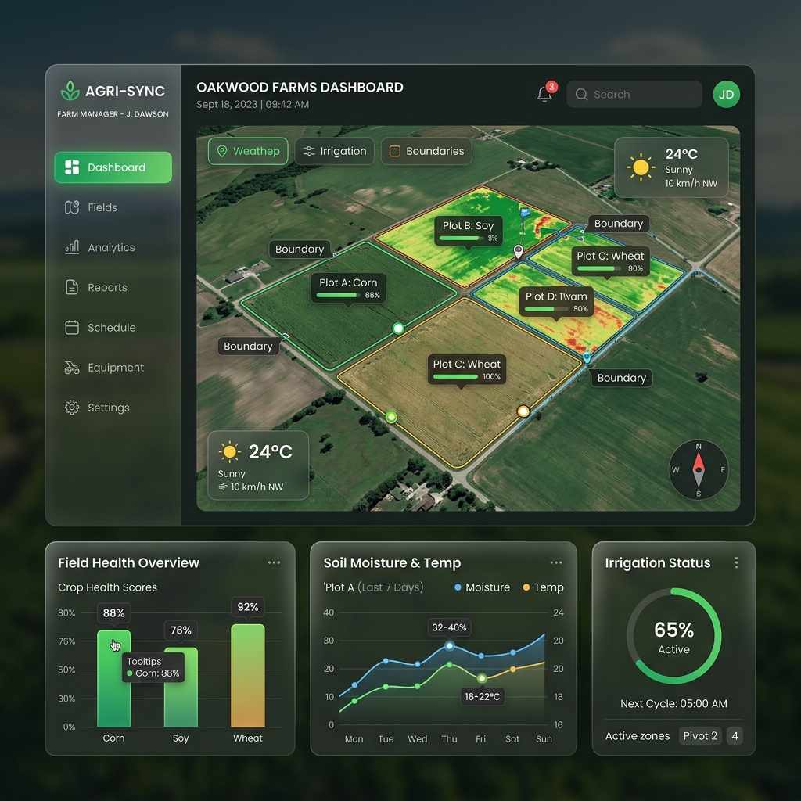
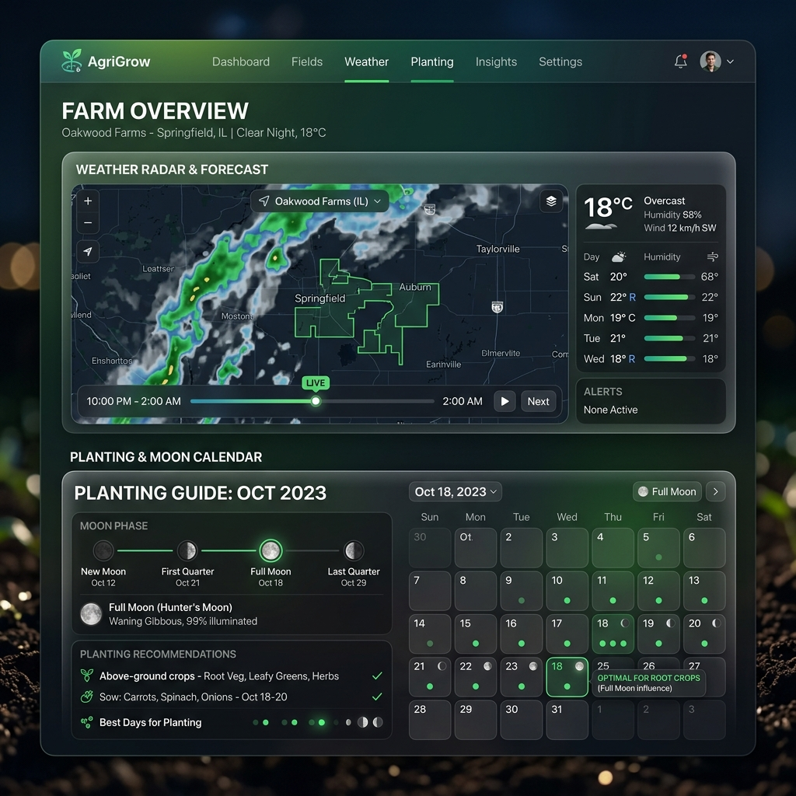
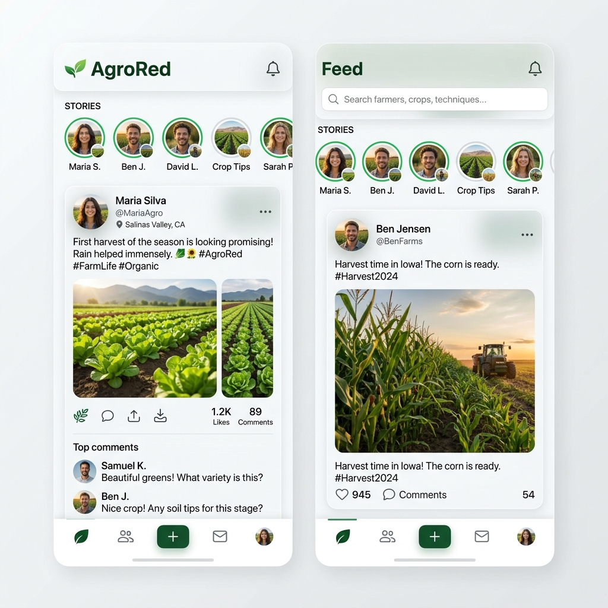
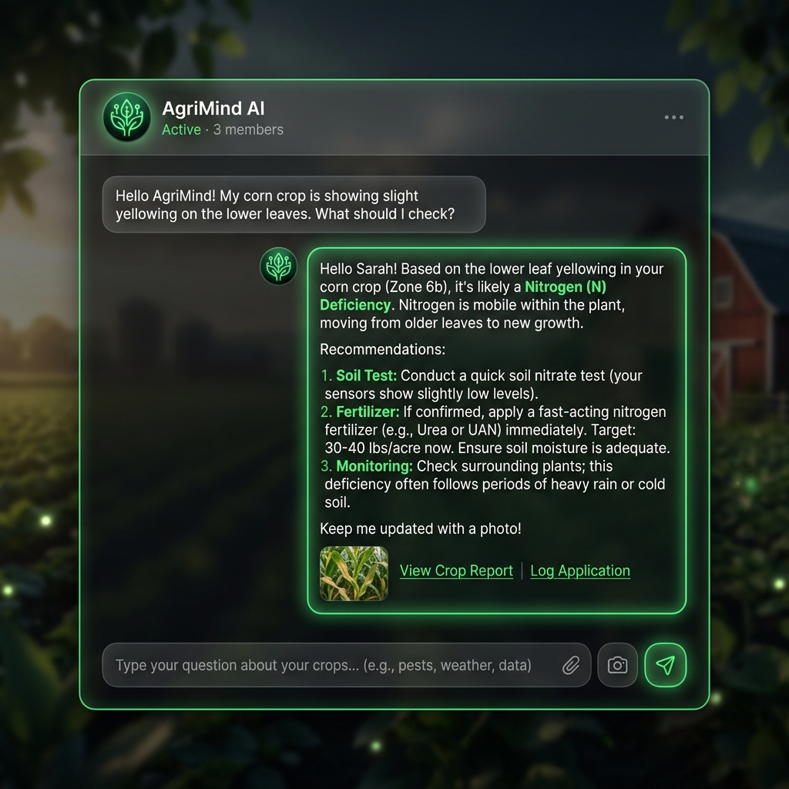

La Idea Original
El equipo de 6 fundadores se reúne con un objetivo claro: llevar la tecnología más avanzada directamente a las manos de los agricultores. Nace la visión de AgroSmart como una plataforma todo-en-uno que transformaría el campo para siempre.
Núcleo Agronómico
Desarrollamos el corazón del sistema: la gestión y registro de cultivos. Creamos una arquitectura sólida para que cada agricultor pudiera registrar sus parcelas, planificar fechas de siembra y llevar el control detallado de su producción de forma segura.

Marzo 2025Visión Satelital (Globo 3D)
Integramos el motor satelital interactivo en 3D. Ahora los usuarios pueden visualizar sus terrenos desde el espacio, revisar la topografía, elevación y estado del terreno con marcadores inteligentes de colores según su ubicación o cooperativa.

Agosto 2025Clima de Precisión y Luna
Sumamos potentes radares meteorológicos (nubosidad, lluvia, incendios, índice UV) en tiempo real. Además, escuchamos al agricultor tradicional e incorporamos el Calendario Lunar interactivo para optimizar las podas y siembras.
Control Empresarial
Pensando en las asociaciones y el gobierno, lanzamos el Panel de Administración Global y Cooperativas. Agregamos los planes de licencia (Bronce, Diamante, Esmeralda) para escalar la distribución del software en todo el país.
Videollamadas Satelitales
Llevamos a los expertos directamente al campo virtualmente. Implementamos una infraestructura de videollamadas peer-to-peer de alta calidad para conectar ingenieros agrónomos con agricultores sin salir de la plataforma.

Abril 2026Lanzamiento de AgroRed
Nace AgroRed, la primera red social exclusiva para el sector agrícola. Un espacio vibrante donde nuestra comunidad sube fotos de sus cosechas, comparte tips, comenta y da 'likes', creando una red de conocimiento inmensa.

Junio 2026 (Actual)La Era de la IA (Agro IA)
Dimos el salto definitivo al futuro. Integramos nuestra Asistencia Inteligente (Jarvis) impulsada por más de 50 modelos avanzados (GPT-4o, Claude 3.5, Gemini 2.5). Ahora el agricultor tiene un ingeniero experto virtual disponible las 24 horas para resolver cualquier duda.